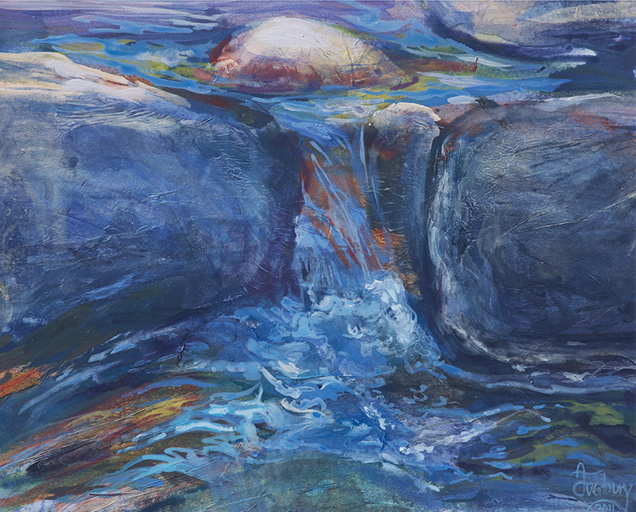
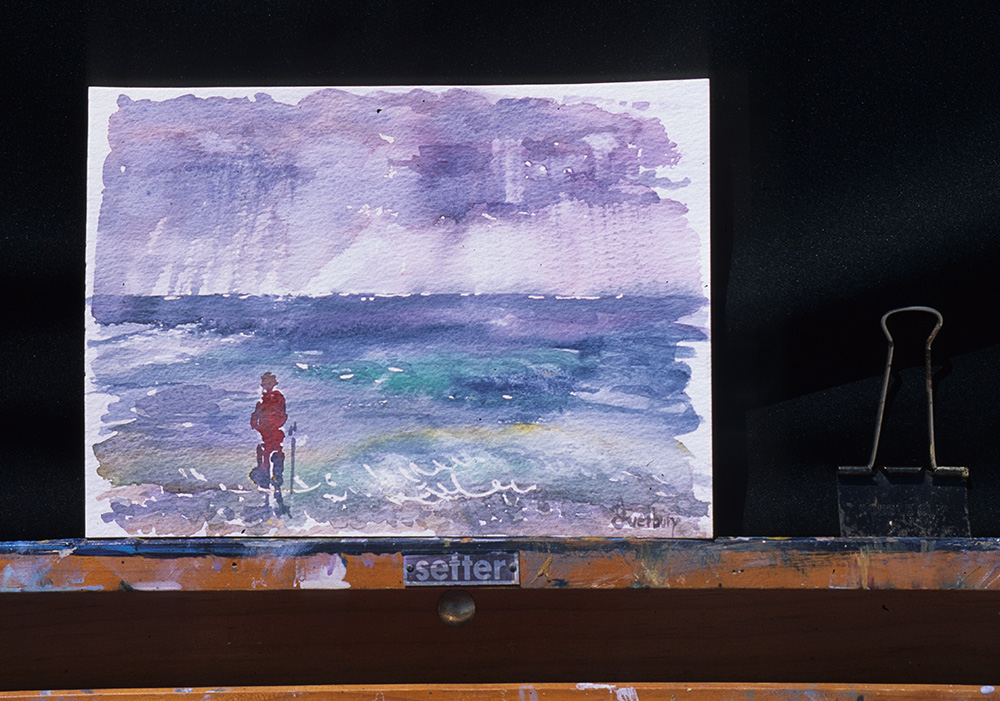

Work
The close contact with Nature in my childhood has conditioned the way I work. My choice of medium and approach depends to a large extent on the subject of the painting.
The main idea is often born from a sudden, fleeting vision which is then worked from memory or with the aid of a sketch and sometimes photographs as a back-up, but I prefer to do my initial trials in watercolour for its convenience and rapid results, which are then explored and further developed back in the studio. At this point the external inspiration is processed inwardly.
The resultant painting may be based on close observation, or the information may be further processed to become more abstract based on the interaction of blocks of colour and the exploration of surface texture which is also an important element.
Colour is the main element in my work. I am fascinated by how colour can communicate and suggest different moods and emotions. Colour may then become the supreme element of the painting overriding extraneous information and details. This has not always been so. In my early years as a student, being thrown in at the deep end, colour and colour theory were a formidable and bewildering challenge. My understanding of colour grew from making tonal, monochrome paintings. As my journey into colour began, I spent a full year painting only in blues! This seems hard to believe now when colour lies at the heart of all my work.
I like the freedom and the versatility of acrylics. However, for me painting in oils requires greater scrutiny in the mixing and lends itself more to working from direct observation either in the studio or en plein air. I use oils when it is a question of closer observation of the subject. I find that this approach suits me.
I tend to work in watercolour and pure pigments when painting flowers and there is a need to go back to the observation of Nature in something more intimate and transient, focusing to capture the inherent qualities of a specific flower. This has led to a build-up of a flower series reflecting the flow of the seasons as a kind of progression.
Although my daily inspiration is based on the surrounding Mediterranean scenery, my link with the English countryside is still strong and is upheld by my annual trips to Cornwall and the Cotswolds.
There are recurrent themes in my work: a fascination with water, the sea, reflections, trees and woodland, and I return time and again to certain places where I feel that the history of the planet is encapsulated in the rocks hewn over centuries. The solidity of rocks is the polar opposite to the transience of water. For me these two contrasting elements - the static and transient, patterns and transparencies - work together and form the basis of many series in my work.
I am increasingly fascinated with the place of Man in the environment. Placing a human figure in the landscape immediately establishes a connection between Man and the natural world. He is not just a figure in the landscape but is also the seer, the one who contemplates the place that he is a part of. The dynamics of the painting change with the human presence. Time is frozen. The human figure, Man the Time-keeper, is bereft of his control and, standing still for a moment, is forced to contemplate the fragility and transience of his existence.
The working process is a duel between the ordered choice and laying down of paint and random, gestural, energetic and fluid marks. It involves the refinement of established working methods and a discovery of new possibilities, pushing the boundaries to create new visual effects using different materials which encourage the unexpected and foster new discoveries.
Over the years I have come to realise the importance of understanding the inherent qualities of each medium and their potential since, at the end of the day, these are our vehicles for expressing our inner vision.
If you are interested in viewing more of my work, for enquieries or pricing please click here to visit and contact Stoa Gallery, the gallery I work with.